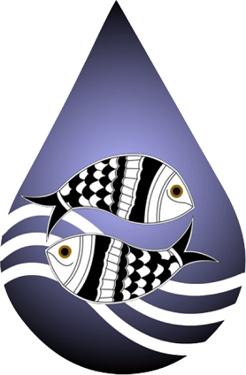

— thirteen years since 30 September 2013 —
A season of water, work, and the communities who make a living by the river’s edge. Join us as we mark thirteen years and celebrate together.
You and your family are warmly invited to the Annual Day of the Centre for Aquatic Livelihood – Jaljeevika, marking thirteen years since our founding on 30 September 2013 — an evening to honour the fisherfolk, farmers, field teams, and partners who have shaped our work across Bihar, Uttar Pradesh, Madhya Pradesh, and Maharashtra.
The venue is being finalised and will be shared shortly — save the date and time for now.
Let us know you’re coming — it helps us plan seating, food, and a place for you at the table.
Confirm your visit